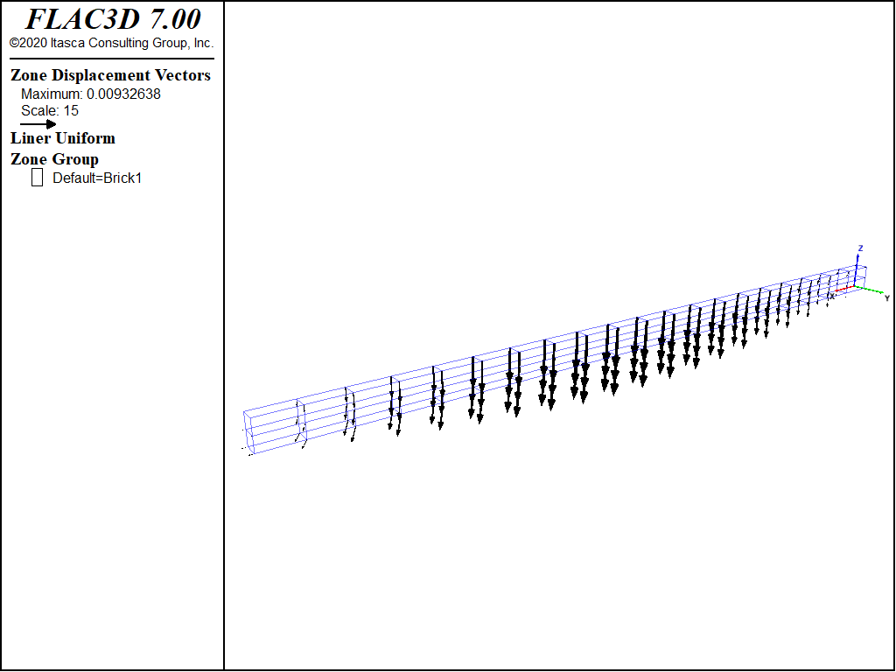
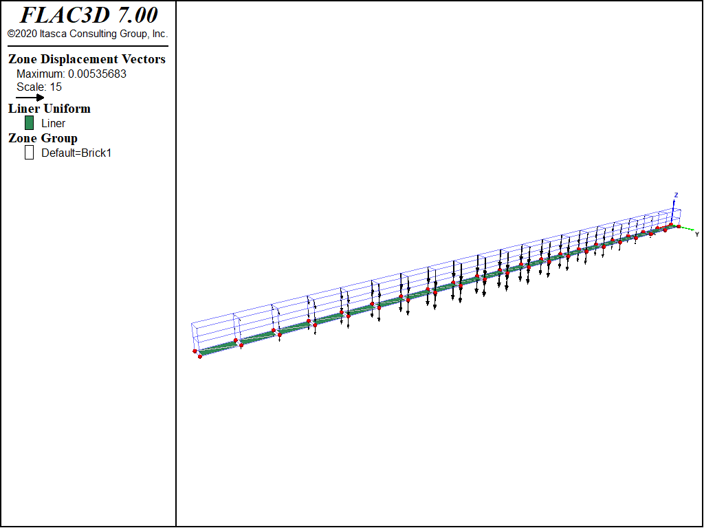
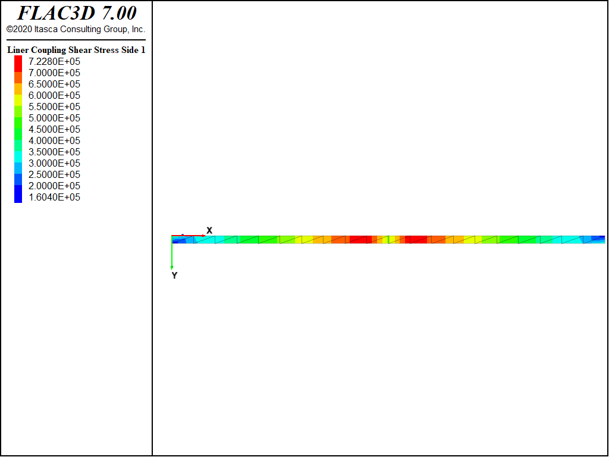
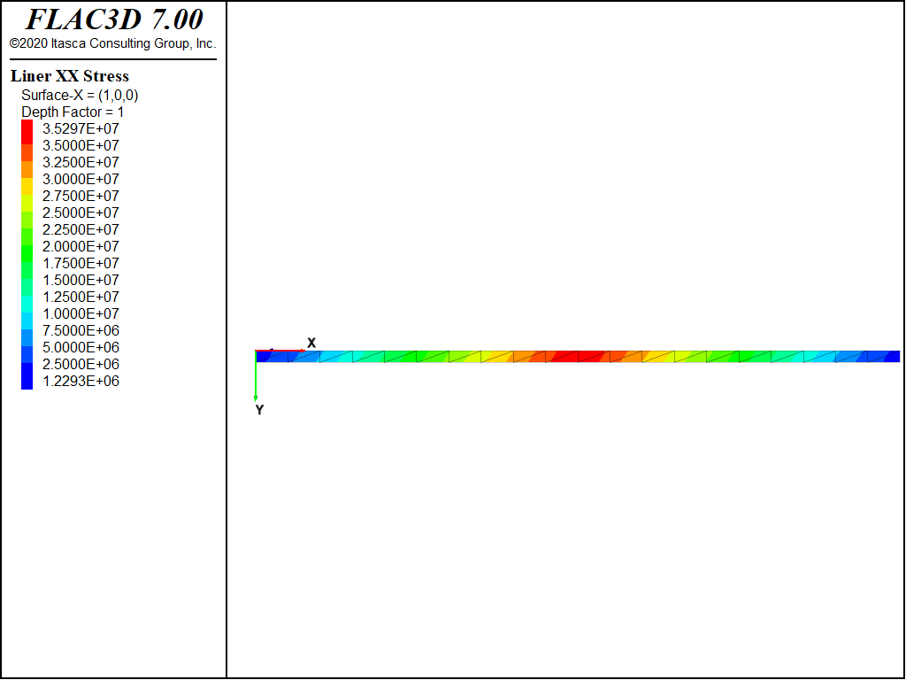
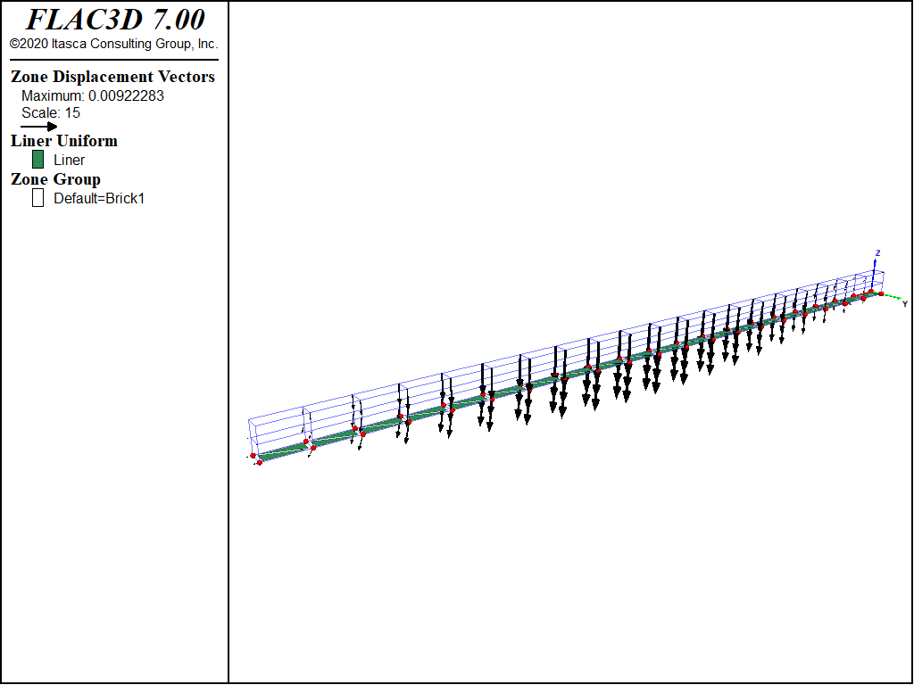
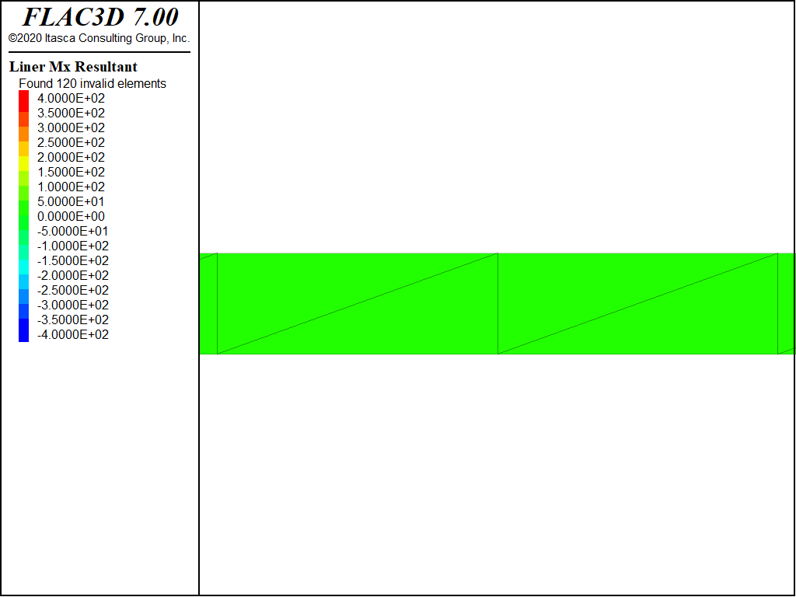

衬砌加筋梁
问题描述
注意
要在 FLAC3D 中查看此项目，请使用菜单命令 。选择“Structure/Liner/ReinforcedBeam”，然后选择“ReinforcedBeam.f3prj”进行加载。所使用的主数据文件（main data files）显示在本示例末尾。其余数据文件可在项目中找到。
一根简支木梁（\(E\) = 8.6 GPa，\(\nu\) = 0，长 2.5 m，截面 45 mm × 90 mm）在其中点承受 2000 N 的集中荷载。该梁用 40 个 FLAC3D 网格单元模拟。（请注意，要获得正确的梁理论解需要更多网格单元。按此模拟的系统刚度过大；但对于本示例已经足够。）FLAC3D 模型和位移场如图 1（Figure 1） 所示。
将该问题重新运行，在梁底附着 10 mm 厚的钢衬砌（\(E\) = 200 GPa，\(\nu\) = 0.3）。通过将衬砌黏聚强度设为较大值，衬砌-梁界面不允许发生滑动。（衬砌刚度使用衬砌刚度公式（the liner stiffness equation）选取。）衬砌加筋梁的位移场如图 2（Figure 2） 所示。衬砌的存在将跨中最大挠度从 9.4 mm 减小到 5.4 mm。沿衬砌-梁界面产生了剪应力（见图 3（Figure 3）），衬砌外缘的最大拉 \(xx\) 应力约为 35 MPa（见图 4（Figure 4））。衬砌中面处的最大拉 \(xx\) 应力为 35 MPa。将衬砌黏聚强度设为零后，衬砌-梁界面允许发生滑动。界面剪应力降为零，位移场增大到几乎与无衬砌梁一致（见图 5（Figure 5））。衬砌仍为组合系统提供一定刚度。


图 1：无衬砌木梁的位移场。


图 2：衬砌加筋木梁的位移场（衬砌-梁接触面无滑移）。


图 3：作用在衬砌上的剪应力（衬砌-梁接触面无滑移）。


图 4：衬砌外缘承担的 xx 向应力（衬砌-梁接触面无滑移）。


图 5：衬砌加筋木梁的位移场（衬砌-梁接触面完全滑移）。
我们通过重新运行本示例来说明网格配置对衬砌单元与 FLAC3D 网格连接的影响，但通过在 structure liner create 命令中添加关键字 cross-diagonal 来生成交叉对角网格。两种不同网格类型的弯矩内力场分别如图 6（Figure 6） 和图 7（Figure 7） 所示。可以看出，对于在面中心有节点的交叉对角网格，每个网格单元面中心处都出现接近零的弯矩，而交叉网格则不存在这一异常现象。structure liner create 命令参考中描述了这种行为的原因，此处再重复说明。
将单元连接到网格时，最好将节点布置在网格点上。如果有限元类型能够抵抗弯曲（DKT、DKT-CST 或 DKT-（CST 混合）单元），则沿单元面和网格单元面可能出现不协调，因为横向（面外）位移场在单元面上呈三次变化，而在网格单元面上仅呈线性变化。因此，将抗弯单元刚性地连接到网格单元面时，最好采用交叉网格，因为交叉对角网格的中间节点将被约束为按网格单元面的线性位移场平动。这会过度约束单元，并且在存在非零弯矩场时可能在这些中间节点处产生接近零的弯矩。


图 6：衬砌中心附近的弯矩内力 \(M_x\)（交叉网格）。

数据文件
ReinforcedBeam.dat
; 衬砌结构单元应用算例——衬砌加固梁
model new
model large-strain off
model title 'Bending of a liner'
; 创建网格几何形状
zone create brick size (20,1,2) ...
point 0 (0,0,0) point 1 (2.5,0,0) ...
point 2 (0,45e-3,0) point 3 (0,0,90e-3)
zone face skin
; 本构模型和参数
zone cmodel assign elastic
zone property young 8.6e9 poisson 0
; 边界条件
zone gridpoint fix velocity-x range position-x 0 position-z 0
zone gridpoint fix velocity-z range position-x 0 position-z 0
zone gridpoint fix velocity-z range position-x 2.5 position-z 0
zone gridpoint fix force-applied-z -1000 ...
range position-x=1.25 position-z=90e-3
model save 'Start'
; --- 无衬砌工况
model solve convergence 1
model save 'Unlined'
; 有衬砌工况
model restore 'Start'
; 创建衬砌并指定参数
struct liner create by-zone-face range group 'Bottom'
struct liner property isotropic=(200e9, 0.3) thickness=10e-3 ; 钢
struct liner property coupling-stiffness-normal=1.9e12 ...
coupling-stiffness-shear=1.9e12 coupling-cohesion-shear=1e20 ...
coupling-yield-normal=1e20
struct mechanical damping combined-local
model solve convergence 1
model save 'Lined-NoSlip'
; 降低衬砌抗剪强度
struct liner property coupling-cohesion-shear=0.0
model solve convergence 1
model save 'Lined-Slip'
; 用交叉对角单元重建衬砌
model restore 'Start'
struct liner create by-zone-face cross-diagonal range group 'Bottom'
struct liner property isotropic=(200e9, 0.3) thickness=10e-3 ; 钢
struct liner property coupling-stiffness-normal=1.9e12 ...
coupling-stiffness-shear=1.9e12 coupling-cohesion-shear=1e20 ...
coupling-yield-normal=1e20
struct mechanical damping combined-local
model solve convergence 1
model save 'Lined-Cross'
| 这些内容对您有帮助吗？… | FLAC3D © 2019, Itasca | 原文更新于 2020 年 10 月 8 日 |